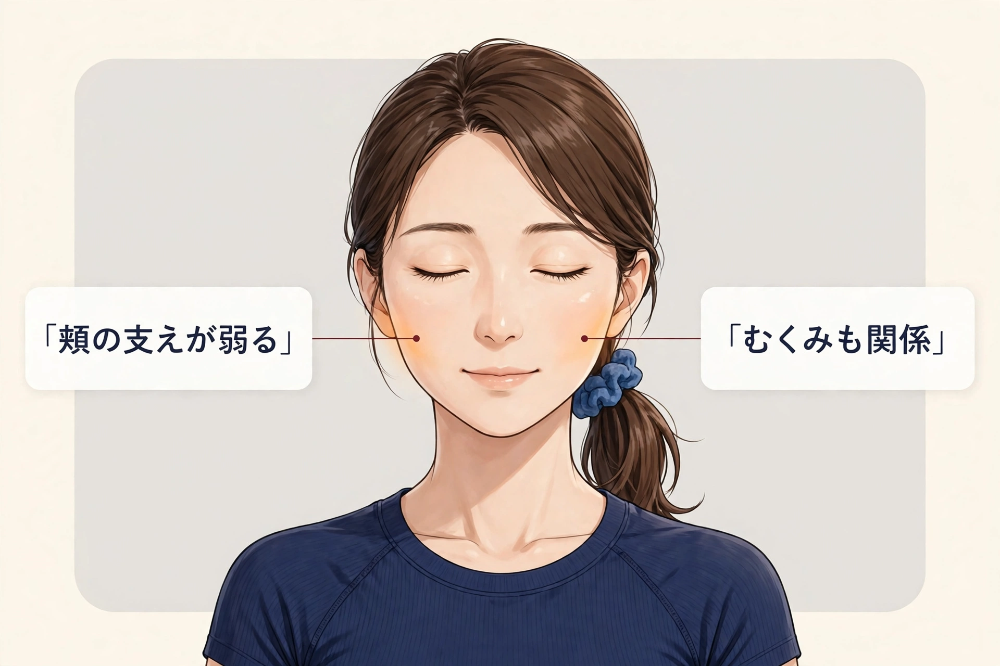

顔のたるみ
美容整体ステラ・ポラリス東三国｜大阪市淀川区東三国・東三国駅徒歩5分・女性向け

下がりがちな頬を引き上げて、すっきりしたフェイスラインへ
頬の位置が下がって見える、フェイスラインがぼやける、写真に写る自分の顔が以前より疲れて見える——顔のたるみは、年代とともに多くの女性が気になり始めるお悩みです。背景には、頬を支える表情筋の衰えだけでなく、頭が前に出た姿勢や首・肩のこわばり、顔のむくみなど、顔の外側の条件も重なっていると言われています。このページでは、顔のたるみの背景にある仕組みと、顔まわりと姿勢の土台から整えて、頬が引き上がって見える印象を目指す当サロンでのケア、ご自宅でできるセルフケアをご案内します。まずは下のチェックで、ご自身の状態を確かめてみてください。たるみは一気に進むものではなく、日常の条件の積み重ねで少しずつ目立ってくるものです。
ご予約はこちら（Coubic）こんなお悩みありませんか
- 頬の位置が、以前より下がって見える
- フェイスラインがぼやけて、二重あごっぽく見えることがある
- 写真に写る顔が、実物より疲れて見える気がする
- 朝はすっきりしているのに、夕方になると顔が下がって見える
- 笑ったあとの頬が、元に戻りにくくなった気がする
- 首や肩のこわばりが強い日は、顔も重く感じる
- 鏡を見ると、つい頬を持ち上げてみたくなる
当てはまる項目が多いほど、頬を支える力の低下と、姿勢やむくみの影響が重なっている目安とされています。顔のたるみは顔だけの問題ではなく、首・肩・姿勢という土台ともつながっています。次のセルフチェックで、頬の支え具合の傾向を確かめてみましょう。
簡単セルフチェック（頬の支えチェック）
鏡の前に座って、頬の動きを確かめる簡単な方法です。
- 鏡の前で、口角を横に引くように「いー」と声を出すつもりで頬を動かします。
- 頬の高い位置が持ち上がるか、左右で上がり方に差がないかを確認します。
- 頬が持ち上がりにくい、片側だけ動きが小さい場合は、頬を支える表情筋が弱っている目安と言われています。
※これは診断ではありません。ご自身の状態の傾向を知る目安としてお使いください。
顔のたるみの原因と仕組み
頬を支える表情筋の働き
頬のふくらみは、頬骨のまわりに集まる表情筋が内側から支えています。これらの筋肉は、笑ったり話したりする日常の動きで使われますが、無表情で過ごす時間が長い生活では働く機会が減り、支える力が少しずつ弱くなると言われています。図1のように、頬の支えが弱くなると、頬の位置そのものが下がって見え、フェイスラインにも影響が広がります。日々の表情の使い方が、そのまま頬の支えを保つ運動にもなります。

図1 頬を支える力が弱くなった状態と、頬が引き上がって見える状態のイメージ。体の状態には個人差があります。施術では、この仕組みを踏まえてケアを組み立てます。
頭の位置と顔の引き下げ
スマートフォンやパソコンを見る姿勢で頭が前に出ると、顔の皮膚や筋肉は下向きに引かれやすくなります。あわせて首の前側や胸まわりが縮むと、フェイスラインを下から支える条件も崩れがちです。顔のたるみが気になるときほど、顔だけでなく、頭の位置と姿勢の土台を一緒に見直すことが大切です。頭の位置が整うと、顔まわりの印象も変わって見えます。
むくみと巡りの影響
顔の余分な水分が抜けにくい状態では、頬やフェイスラインが重く、ぼやけて見えます。首や鎖骨まわりの巡りが滞ると、顔のむくみが戻りにくくなると言われています。朝と夕方で顔の印象が変わる方は、たるみに加えてむくみの影響も重なっている目安になります。首・肩のこわばりをゆるめることは、顔の巡りを助ける土台づくりにもつながります。首まわりの緊張をゆるめることも、顔の巡りを考えるうえで欠かせません。
年代と生活習慣の積み重ね
年代とともに、皮膚のハリを保つ成分は少しずつ減っていくと言われています。そこへ、紫外線を浴びる機会の多さ、睡眠不足、片側だけで噛むクセなどが重なると、たるみの進み方に左右差や個人差が出てきます。急に変えようとするのではなく、姿勢・巡り・表情の使い方という日常の条件を整えていくことが、頬の印象を保つ土台になります。小さな条件の見直しを重ねることが、印象の変化につながります。
セルフケアで足りる場合・サロンケアが向く場合
たるみの進みがゆるやかで、表情を動かしたり温めたりすると顔がすっきり感じる日が多い場合は、まずご自宅でのセルフケアを続けて様子を見る方法があります。一方で、頬の下がりが進んできた気がする、首・肩のこわばりが強く顔まで重い、姿勢のクセから見直したいという場合は、サロンでのケアが向いている目安になります。サロンでは、顔まわりのケアと姿勢の土台づくりを組み合わせて、施術後に「頬が上がって見える」「顔が軽い」と感じやすい状態を目指します。どちらが正解というものではなく、今の状態に合わせて選ぶことが大切です。
当サロンでのケア
当サロンの顔のたるみケアは、「頬が引き上がって見える、すっきりした印象」を目指す組み立てです。まず頭の位置と首・肩の状態、頬の動きを一緒に確認し、部位と目的に合わせて3つの手技を組み合わせます。
美容整体：頭の位置と背骨のラインを整え、顔を下に引く姿勢のクセをゆるめる土台をつくることを目的に。首や肩まわりの緊張がゆるむと、顔まわりのケアも届きやすくなります。
アロマオイルマッサージ：顔から首、デコルテまでをオイルでやさしくゆるめ、巡りが流れやすい状態を目指します。むくみが抜けて、フェイスラインがすっきり見える感覚につながるケアです。
もみほぐし：頭皮や耳まわり、首の付け根など、顔とつながる部位のこわばりをほぐし、頬が動きやすい状態を目指して進めます。
ケアを通して目指すのは、こんな変化です。
- 頬の位置が上がって見え、顔全体が明るい印象へ
- フェイスラインがすっきりして、横顔のラインが整う感覚へ
- 顔のむくみが抜けて、朝のような軽さが続く状態へ
- 首・肩のこわばりがゆるみ、頭の位置が整った姿勢へ
- 表情が動かしやすくなり、笑顔がつくりやすい状態へ
施術の仕上げには、ご自宅で続けやすい頬の体操や、首まわりを温めるポイントもお伝えします。頬が上がって見える感覚を知ることが、日常の姿勢や表情の使い方を見直すきっかけになります。強さは途中でも調整できますので、遠慮なくお声がけください。

施術の流れ
ご来店後、気になる部位やお悩み、ご希望の強さなどをうかがいます。完全個室のため、周りを気にせずお話しいただけます。
頭の位置や首・肩の張り、頬の動きなどを一緒に確認し、その日の状態に合わせた施術の進め方をご案内します。気になる点があれば、その場で一緒に確認します。
美容整体を中心に、ご希望に応じてアロマオイルマッサージ、もみほぐしを組み合わせて進めます。強さは途中でも調整できます。
施術後の状態を確認し、ご自宅で続けやすいセルフケアのポイントをお伝えします。次回の目安についても、ご希望があればご案内します。
料金
| コース | 通常価格 | キャンペーン価格（12/25まで） |
|---|---|---|
| 80分 | 8,000円 | 3,000円 |
| 100分 | 10,000円 | 4,000円 |
| 120分 | 12,000円 | 5,000円 |
クリスマスキャンペーンは12月25日まで、ご新規様もリピーターの方も対象です。施術内容は当日の状態とご希望に合わせて組み立てます。
ご自宅でできるセルフケア
- 頬の引き上げ体操：口角を斜め上に引き上げて5秒キープし、ゆるめます。5回を1セットとして、朝の洗顔後に取り入れるのが目安です。
- あいうえお体操：口を大きく開けて「あ・い・う・え・お」とゆっくり発声するつもりで動かします。頬や口まわり全体を使う体操です。
- 耳回しほぐし：耳全体を指でつまみ、前回し・後回しを各10回。顔まわりの巡りを助けるつもりで、やさしく行ってください。
- 首の付け根を温める：蒸しタオルを首の後ろに当てて5分ほど温めます。首・肩のこわばりがゆるむと、顔の重さも感じにくくなります。
ご自宅でのケアに：セルフケア資料ライブラリ（無料）
このお悩みに合わせたセルフケアの考え方を、無料の資料ライブラリでご紹介しています。
セルフケア資料ライブラリを開く →
受診の目安
顔の片側だけが急に下がる・動かしにくい、ろれつが回りにくいといった変化がある場合や、顔の腫れが急に進む場合は、施術の前に医療機関への受診をおすすめします。気になる変化が続く場合も、まずは医療機関でご相談ください。ご不安な点があるときは、無理に施術を進めず、受診を優先してください。
よくある質問
Q. 初めてでも大丈夫ですか？
はい。当サロンは完全予約制・完全個室で、1日3組までのご案内です。最初にカウンセリングで顔まわりのお悩みや首・肩の状態をうかがい、無理のない内容から始めます。施術の前後で「頬が上がって見える」「顔が軽い」といった感覚の違いを一緒に確認しながら進めますので、初めての方も安心してご利用いただけます。
Q. 顔の施術は痛いですか？
顔まわりは繊細な部位のため、やさしい圧を基本に進めます。頭皮や首の付け根など、こわばりの強いポイントは状態に合わせて丁寧にほぐします。感じ方には個人差がありますので、施術中も遠慮なくお声がけください。施術中に力加減が気になるときは、その場でお声がけいただければすぐに調整します。
Q. コースはどう選べばいいですか？
80分・100分・120分のコースがあり、ケアしたい部位の広さやお時間のご都合に合わせて選べます。顔まわりに加えて、土台となる首・肩・背中までゆっくり整えたい方には、100分が選ばれることが多いコースです。迷われる場合は、ご予約の際にお気軽にご相談ください。
Q. 場所と予約方法を教えてください。
大阪市淀川区東三国、東三国駅から徒歩5分です。完全予約制のため、予約サイト（Coubic）またはLINE公式アカウントからご予約をお願いしています。
Q. 男性も受けられますか？
当サロンは女性向けのため、男性の方は、同じ東三国の男性専用整体院「北辰堂」をご案内しています。
施術者について
平賀建人（施術歴30年）
鍼灸師・登録販売者・アロマセラピスト・パーソナルトレーナーの資格を持ち、美容整体を中心に、アロマオイルマッサージ、もみほぐしを、その日の状態とご希望に合わせて組み合わせて施術します。このページの内容は、施術者の知識と経験をもとに作成しています。

料金・ご予約
ご新規様もリピーターの方も 12/25まで
80分 3,000円／100分 4,000円／120分 5,000円
通常価格は80分8,000円／100分10,000円／120分12,000円です。施術内容はご希望に合わせて組み立てます。
営業時間：月〜土 17:00〜23:00／日 10:00〜23:00（完全予約制）｜電話：080-2468-3086
大阪府大阪市淀川区東三国2丁目25番4号101（東三国駅徒歩5分）
専門解説で詳しく見る
仕組みから詳しく知りたい方は、専門解説シリーズのこちらの記事もあわせてご覧ください。